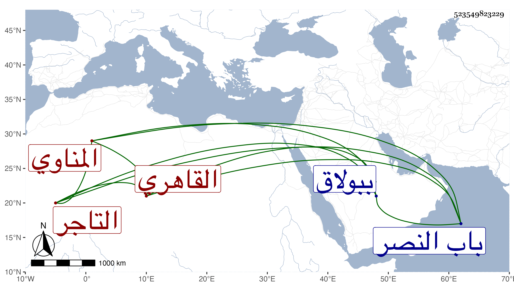

0902Sakhawi.DawLamic.ITO20230111-ara1.EIS1600.523549823229
Biography ID: 523549823229
368
حسن بن إبراهيم بن حسن بن إبراهيم البدر بن البرهان المناوي الاصل القاهري التاجر ابن التاجر أخو عبد القادر الآتي والماضي أبوهما ويعرف كل منهم بابن عليبة تصغير علبة نشأ في كنف أبويه فحفظ القرآن وأقبل على التجارة وكان حاذقا فيها كثير التودد والعقل صبورا محتملا معدودا في وجوه الناس ، مات في ظهر يوم الخميس ثاني جمادى الأولى سنة تسع وثمانين ببولاق وجيئ به في محفة إلى بيتهم بدرب جقمق من سوق أمير الجيوش ، وأظنه قارب الخمسين فقد تزوج خديجة ابنة عمه ناصر الدين محمد في سنة سبع وخمسين ، وكان له مشهد حافل ثم دفن بتربتهم بالقرب من مصلى باب النصر .
